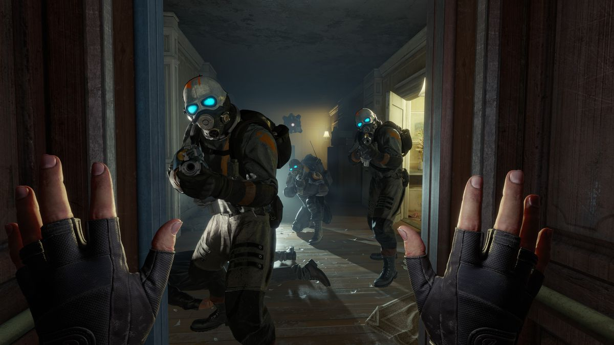

I played the final three hours of Half-Life: Alyx in a single session. Before Alyx, I never used VR for more than 30 minutes at a time. I don't get motion sick but I do get generally tired of VR. Tired of having a hunk of plastic strapped to my face, of having to stand and stoop and reach awkwardly around, of not being able to check my phone or have a sip of coffee. But I didn't take a break, or even want to, during the final chapters of Half-Life: Alyx. I wasn't tired. I was completely enthralled and unwilling to stop playing.
When I played through the ending (no spoilers here, but trust me, you'll want to keep your VR headset on through the credits), I reloaded my last autosave and played through the ending a second time. And then I went back to the beginning of the game and started playing again. I didn't have much doubt Half-Life: Alyx would be a great VR experience—Valve makes its own VR headset and software, after all. But I was skeptical it could also be a great, proper Half-Life game, and I was thrilled to discover it really is. While it's sandwiched between the events of Half-Life 1 and Half-Life 2 the repercussions of its story extend well into whatever future there is for the Half-Life series, and its technical accomplishments will leave other developers, once again, struggling to keep up.
As in the original Half-Life, there are those precious moments where you're able to ascend from the oppressive sewers and tunnels and get to stand outside under the sky again, feeling relief, basking in the extra space where the walls are dozens of yards away instead of within arm's reach. It's often just a tease, a brief respite to walk around outside the claustrophobic ceilings and corridors for just a few minutes, until you discover the only way to progress is back down some bleak set of concrete steps as the game once again pushes you into the gloom.
Reloading in the dark is another thing altogether, because it you're using the hand your flashlight is mounted on to reach over your shoulder into your backpack—which means you briefly can't see whatever monster is lurching toward you. Using two hands to move an obstruction or lift a heavy roll-up door requires putting your gun away, and sometimes there's something waiting on the other side of that door. The slow pace of Half-Life: Alyx allows you to build up a bit of muscle memory for performing all these actions, but it also delights in testing you. I failed that test plenty of times, including once where I accidentally switched from my gun to an empty hand and pointed at a zombie instead of shooting it, and the time I tried to load a sardine can into my pistol because I thought I'd gravity-grabbed a fresh mag off the floor.
What Half-Life: Alyx lacks in close-up interactions it makes up for in the sheer thrill of being in a fresh Half-Life game after all these years. When conversation turns from the matters at hand to Half-Life history, to talk of the Black Mesa incident, it's a bit of a thrill. I remember that! I was there! When the topic of Gordon Freeman comes up, it's an electrifying feeling. Hey, I've heard of him. I was him! And as the mission turns from the rescue of Eli Vance to the investigation of a dark secret held by the Combine, the intrigue and excitement propelled me forward through the rest of the game, eager to have my questions answered, to uncover new mysteries, to discover what was being added to the lore and history of the Half-Life narrative that I've enjoyed for decades. I wasn't disappointed.